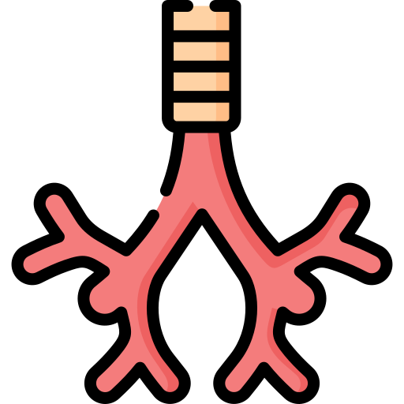

Что такое трахея?
What is the trachea?
Трахея деген не?
Трахея, обычно называемая дыхательным горлом, является важной частью дыхательной системы человека. Она служит проходом для воздуха между гортанью и бронхами, позволяя кислороду достигать легких. Давайте рассмотрим ее анатомические особенности, размеры, слои стенки трахеи, связанные с ней мышцы и функции её частей.
The trachea, commonly called the windpipe, is an important part of the human respiratory system. It serves as a passage for air between the larynx and bronchi, allowing oxygen to reach the lungs. Let's look at its anatomical features, dimensions, layers of the tracheal wall, associated muscles, and functions of its parts.
Трахея, әдетте дем алу жолы деп аталады, адамның тыныс алу жүйесінің маңызды бөлігі болып табылады. Ол көмей мен бронхтар арасында ауа өтуіне жол береді, оттегінің өкпеге жетуіне мүмкіндік береді. Оның анатомиялық ерекшеліктері, өлшемдері, трахея қабырғасының қабаттары, онымен байланысты бұлшықеттер және бөліктерінің функцияларын қарастырайық.
Анатомические особенности:
Anatomical features:
Анатомиялық ерекшеліктері:
Расположение: около половины трахеи находится в шее, спереди от пищевода, и проходит от гортани (на уровне шестого шейного позвонка) до уровня пятого грудного позвонка.
Location: about half of the trachea is located in the neck, in front of the esophagus, and runs from the larynx (at the level of the sixth cervical vertebra) to the level of the fifth thoracic vertebra.
Орналасуы: трахеяның жартысына жуығы мойында, өңештің алдында орналасқан және көмейден (алтыншы мойын омыртқасы деңгейінде) бесінші кеуде омыртқасы деңгейіне дейін созылады.
Длина: у среднего взрослого человека длина трахеи составляет около 10–12 см. Структура: она состоит из С-образных хрящевых колец, которые обеспечивают структурную поддержку. Задняя поверхность трахеи образована гладкими мышечными волокнами, известными как трахеальная мышца. Эта мышца обеспечивает гибкость при глотании.
Length: in an average adult, the trachea is about 10–12 cm long. Structure: it consists of C-shaped cartilaginous rings that provide structural support. The posterior surface of the trachea is formed by smooth muscle fibers known as the trachealis muscle. This muscle provides flexibility during swallowing.
Ұзындығы: орташа ересек адамда трахеяның ұзындығы шамамен 10-12 см. Құрылымы: ол құрылымдық қолдауды қамтамасыз ететін С-пішінді шеміршек сақиналарынан тұрады. Трахеяның артқы беті трахеалды бұлшықет деп аталатын тегіс бұлшықет талшықтарынан тұрады. Бұл бұлшықет жұтқанда икемділікті қамтамасыз етеді.
Слои стенки трахеи:
Layers of the tracheal wall:
Трахея қабырғасының қабаттары:
Слизистая оболочка: самый внутренний слой выстлан псевдослоистым реснитчатым столбчатым эпителием, который содержит бокаловидные клетки, вырабатывающие слизь. Реснички помогают отводить слизь и мусор от легких.
Mucous membrane: the innermost layer is lined with pseudostratified ciliated columnar epithelium, which contains goblet cells that produce mucus. The cilia help move mucus and debris away from the lungs.
Кілегейлі қабық: ең ішкі қабат жалған қабатты ресниткалы бағанды эпителиймен қапталған, ол шырыш өндіретін көзе тәрізді клеткаларды қамтиды. Ресничкалар шырыш пен қоқысты өкпеден шығаруға көмектеседі.
Подслизистая оболочка: этот слой содержит соединительную ткань, кровеносные сосуды, нервы и серозно-слизистые железы. Он помогает увлажнять и согревать входящий воздух.
Submucosa: this layer contains connective tissue, blood vessels, nerves, and seromucous glands. It helps moisten and warm incoming air.
Кілегей асты қабығы: бұл қабат ұлпаларды, қан тамырларын, жүйкелерді және серозды-кілегей бездерін қамтиды. Ол кірген ауаны ылғалдандыруға және жылытуға көмектеседі.
Гиалиновый хрящ: трахея укреплена С-образными кольцами гиалинового хряща. Эти кольца поддерживают жесткость и предотвращают спадение трахеи во время дыхания.
Hyaline cartilage: the trachea is reinforced with C-shaped rings of hyaline cartilage. These rings maintain rigidity and prevent tracheal collapse during breathing.
Гиалинді шеміршек: трахея С-пішінді гиалинді шеміршек сақиналарымен нығайтылған. Бұл сақиналар қаттылықты сақтайды және тыныс алу кезінде трахеяның құлауына жол бермейді.
Адвентициальная оболочка: самый внешний слой состоит из соединительной ткани, которая связывает трахею с окружающими структурами.
Adventitia: the outermost layer consists of connective tissue that connects the trachea to surrounding structures.
Адвентиция: ең сыртқы қабат трахеяны қоршаған құрылымдармен байланыстыратын ұлпадан тұрады.
Ассоциированные мышцы:
Associated muscles:
Қатысты бұлшықеттер:
Трахея поддерживается и стабилизируется различными мышцами:
The trachea is supported and stabilized by various muscles:
Трахея әртүрлі бұлшықеттер арқылы қолдау тауып, тұрақтандырылады:
Грудиноподъязычная мышца: начинается от грудины и крепится к подъязычной кости, обеспечивая устойчивость трахеи.
Sternohyoid muscle: originates from the sternum and attaches to the hyoid bone, providing stability to the trachea.
Грудино-гиоид бұлшықеті: төс сүйегінен басталып, гиоид сүйегіне жалгасады, трахеяны тұрақтандырады.
Грудинощитовидная мышца: эта мышца идет параллельно грудиноподъязычной кости и помогает поддерживать трахею.
Sternothyroid muscle: this muscle runs parallel to the sternohyoid bone and helps support the trachea.
Грудино-тироид бұлшықеті: грудино-гиоид сүйегіне параллель өтетін бұлшықет, трахеяны қолдауға көмектеседі.
Щитоподъязычная мышца: она прикрепляет щитовидный хрящ к подъязычной кости и помогает поднимать гортань во время глотания.
Thyrohyoid muscle: it attaches the thyroid cartilage to the hyoid bone and helps elevate the larynx during swallowing.
Тиро-гиоид бұлшықеті: тироид шеміршегін гиоид сүйегіне жалғайды және жұтқанда көмейді көтеруге көмектеседі.
Функции частей:
Functions of parts:
Бөліктердің функциялары:
Слизистая оболочка: слизистый слой помогает увлажнять и согревать вдыхаемый воздух, одновременно задерживая частицы и патогены слизью и ресничками.
Mucous membrane: the mucous layer helps humidify and warm inhaled air while trapping particles and pathogens with mucus and cilia.
Кілегейлі қабық: шырыш қабаты түскен ауаны ылғалдандырып, жылытады, бір уақытта шырыш пен ресничкалар арқылы бөлшектер мен патогендерді ұстап қалады.
Хрящевые кольца: С-образные хрящи поддерживают проходимость трахеи, гарантируя, что она остается открытой для прохождения воздуха.
Cartilaginous rings: C-shaped cartilages maintain tracheal patency, ensuring it remains open for air passage.
Шеміршек сақиналары: С-пішінді шеміршектер трахеяның өтімділігін сақтайды, ауаның өтуі үшін ашық болуын қамтамасыз етеді.
Трахеальная мышца: эта гладкая мышца обеспечивает гибкость во время глотания и кашля.
Trachealis muscle: this smooth muscle provides flexibility during swallowing and coughing.
Трахеалды бұлшықет: бұл тегіс бұлшықет жұтқанда және жөтелдегенде икемділікті қамтамасыз етеді.
Клинические состояния, связанные с трахеей:
Clinical conditions associated with the trachea:
Трахеямен байланысты клиникалық жағдайлар:
Стеноз трахеи: это сужение трахеи, часто возникающее в результате травмы, воспаления или опухолей. Лечение может включать дилатацию, стентирование или хирургическую реконструкцию.
Tracheal stenosis: narrowing of the trachea, often resulting from injury, inflammation, or tumors. Treatment may include dilation, stenting, or surgical reconstruction.
Трахея стенозы: трахеяның тарылуы, көбінесе жарақат, қабыну немесе ісіктерден болады. Емі дилатация, стентирлеу немесе хирургиялық реконструкцияны қамтуы мүмкін.
Трахеомаляция: это состояние включает ослабление хряща трахеи, что приводит к его коллапсу во время дыхания. Варианты лечения включают трахеостомию или терапию постоянным положительным давлением в дыхательных путях (CPAP).
Tracheomalacia: this condition involves weakening of the tracheal cartilage, leading to its collapse during breathing. Treatment options include tracheostomy or continuous positive airway pressure therapy (CPAP).
Трахеомаляция: трахея шеміршегінің әлсіреуі, тыныс алу кезінде құлауына әкеледі. Емдеу әдістеріне трахеостомия немесе үздіксоз оң қысымды тыныс жолдары терапиясы (CPAP) жатады.
Опухоли трахеи: доброкачественные или злокачественные новообразования могут развиваться внутри трахеи. Лечение может включать хирургическое вмешательство, лучевую терапию, химиотерапию или комбинацию этих методов.
Tracheal tumors: benign or malignant neoplasms may develop inside the trachea. Treatment may include surgery, radiation therapy, chemotherapy, or a combination of these methods.
Трахея ісіктері: қатерсіз немесе қатерлі ісіктер трахея ішінде дами алады. Емдеу хирургиялық араласу, сәуле терапиясы, химиотерапия немесе осы әдістердің комбинациясын қамтуы мүмкін.
Лечение:
Treatment:
Емдеу:
Трахеотомия: в тяжелых случаях обструкции дыхательных путей выполняется хирургическая процедура, называемая трахеотомией, при которой в трахее через шею создается отверстие для обхода обструкции.
Tracheotomy: in severe cases of airway obstruction, a surgical procedure called tracheotomy is performed, creating an opening in the trachea through the neck to bypass the obstruction.
Трахеотомия: тыныс жолдарының тұйықталуының ауыр жағдайларында трахеотомия деп аталатын хирургиялық процедура жасалады, мойын арқылы трахеяда тесік жасалып, бөгетті айналып өтуге мүмкіндік береді.
Интубация: эта процедура заключается в введении трубки через рот или нос в трахею для обеспечения проходимости дыхательных путей во время операций, при дыхательной недостаточности или в бессознательном состоянии.
Intubation: this procedure involves inserting a tube through the mouth or nose into the trachea to maintain airway patency during surgery, respiratory failure, or unconsciousness.
Интубация: бұл процедура ауыз немесе мұрын арқылы трахеяға түтікшені енгізуді қамтиды, операция кезінде, тыныс жетіспеушілігінде немесе адамның санасы жоқ кезде тыныс жолдарының ашық болуын қамтамасыз етеді.
Маневр Геймлиха: это экстренный метод, используемый для удаления инородного предмета, закупоривающего трахею, путем надавливания на живот, заставляя воздух вытеснять закупорку.
Heimlich maneuver: an emergency technique used to remove a foreign object blocking the trachea by applying abdominal thrusts to force air to expel the obstruction.
Геймлих маневрі: трахеяны бітеп тұрған бөгде затты шығару үшін қолданылатын жедел әдіс, құрсаққа қысым жасап, ауаны бөгетті шығаруға мәжбүр етеді.
Важно отметить, что любые медицинские состояния или методы лечения, связанные с трахеей, должны оцениваться и контролироваться медицинскими работниками.
It is important to note that any medical conditions or treatments related to the trachea should be evaluated and monitored by healthcare professionals.
Маңызды ескерту: трахеямен байланысты кез келген медициналық жағдайлар немесе емдеу әдістері медицина қызметкерлерімен бағалануы және бақылануы керек.
üß™ Тест
üß™ Quiz
üß™ Тест
Далее
Next
Әрі қарай